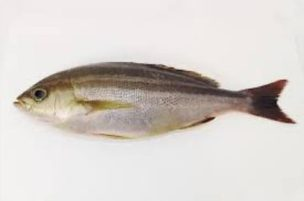
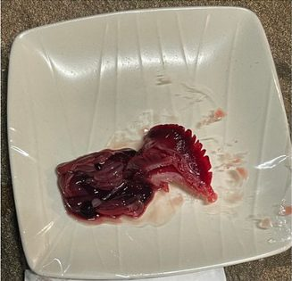
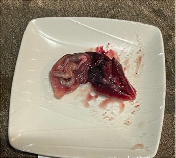

01
生魚・内臓の比較実験
実施条件:生魚を内臓が入ったままの状態で、同じ塩分濃度にした水を上から掛け流し、冷蔵庫で5日間熟成。資料では3条件で比較しており、ここでは水道水とりふれウォーターの写真を掲載しています。



※本資料に記録された実験例であり、食品の安全性・保存期間を保証するものではありません。
食品の洗浄から、品質維持を目的とした検証まで。
野菜・果物など、食品を洗浄する工程での活用。
食品加工の工程で、水を使用する洗浄用途への活用。
食品の品質維持を目的とした活用。実際の比較事例をもとに、用途に応じた検証を進めます。
だし・スープや、お茶・コーヒーなど、飲み物をつくる水として。
資料に記録された実験・使用事例です。実施した条件とあわせて掲載しています。
実施条件:生魚を内臓が入ったままの状態で、同じ塩分濃度にした水を上から掛け流し、冷蔵庫で5日間熟成。資料では3条件で比較しており、ここでは水道水とりふれウォーターの写真を掲載しています。



※本資料に記録された実験例であり、食品の安全性・保存期間を保証するものではありません。
実施条件:少量の水をタッパーに入れ、蓋を閉めて冷蔵庫で保管。2月9日に購入し、1ヶ月後・2ヶ月後の状態を写真で比較。


実施条件:レンコンは機能水につけてジップロックに入れ、チルドで2週間保管。ミョウガはジップロックに入れて10日間保管。


※食材の状態・保存環境によって結果は異なります。ご家庭での保存の記録は個人様向け:料理でもご紹介しています。

りふれの方が色が濃く出ました!塩素は除去したほうが味はいい。
出汁が少しの材料で濃く取れる。
紅茶専門店でのご利用
※お客様の声は個人の感想です。茶葉・食材・抽出条件などによって、色や味は変わります。
「品質維持」は、保存期間の延長や食品の安全性を保証する表現にはせず、品質維持を目的とした活用・検証として紹介します。レタス、レンコン、ミョウガ、生魚・内臓など、既存資料にある比較事例は、実施条件を明記した実験・使用事例として掲載します。
業務でのご利用の価格・導入方法は、個別にご案内します。